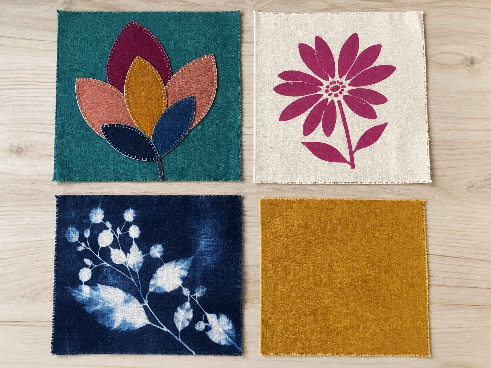
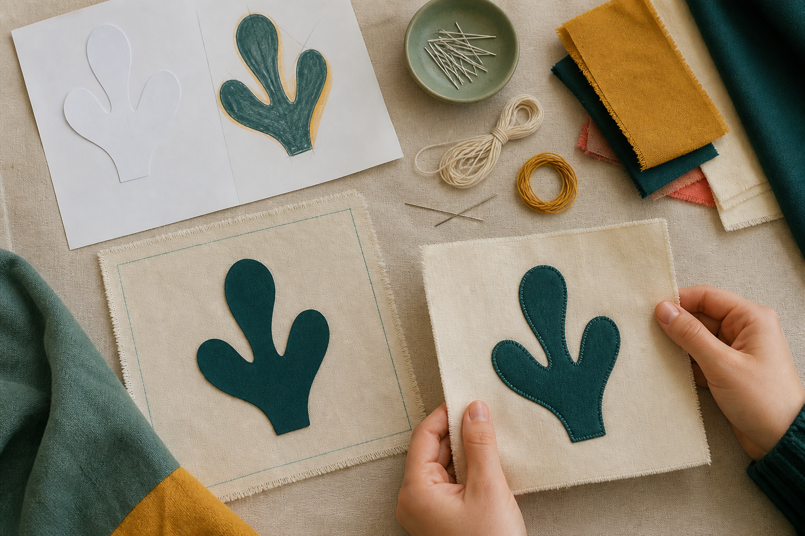
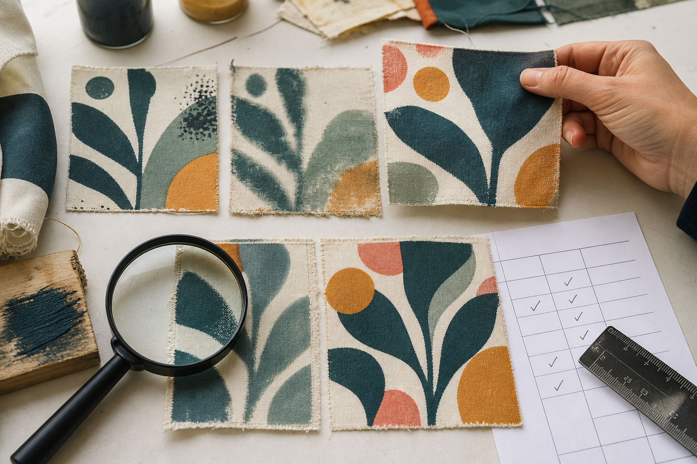

Section 1
Comparing Fabric Decoration Techniques
Learning purpose: Help students compare surface-decoration processes by purpose, appearance, material behaviour, durability and production demands before choosing a method.
Fabric decoration should do more than fill an empty space. A well-chosen technique communicates an idea while allowing the carry item to keep doing its job.
Surface decoration changes the appearance of a fabric without changing the main shape of the product. Appliqué adds cut fabric shapes to a base fabric, stencilling applies colour through an opening, and printing transfers colour or an image onto the surface. Each method creates a different edge quality, texture and amount of visual control.
A designer compares techniques against the intended user and use. Useful questions include: Will the decorated area be rubbed or folded? Does the added layer change the fabric's flexibility? Can the process create the level of detail needed? How much time, material and practice will it require? The most attractive first sample is not automatically the most suitable choice.
A fair sample trial keeps important conditions similar. The designer can use the same base fabric, a design of similar size and the same evaluation headings, then record what changed. Comparing clarity, attachment, feel, durability and material use creates stronger evidence than relying on memory or personal preference alone.
Decoration is normally completed on the relevant flat piece before the main bag is assembled. This gives access to the work area and reduces the chance of accidentally stitching through another layer. A sample still comes first: it reveals problems early enough for the designer to improve the method or select a better one.
Key vocabulary
- surface decoration
- A process that changes the visible surface of a fabric for a communication or aesthetic purpose.
- appliqué
- A technique in which shaped fabric pieces are attached to a base fabric.
- stencil
- A template with openings that controls where colour reaches a surface.
- sample
- A small trial used to practise, compare and improve a process before final production.
- durability
- The ability of a material, feature or finish to remain useful through expected use.
Choosing a method for a frequently handled front panel
- State the job: the decoration must communicate an original reuse message and remain clear on a panel that may be handled often.
- Compare an appliqué sample and a stencil sample using the same base cloth and headings for clarity, flexibility, secure edges or colour boundaries, time and waste.
- Record evidence rather than a favourite: the appliqué is bold and textured but adds a layer; the stencil stays flatter but its boundary needs careful control.
- Select the method whose sample best satisfies the job, then record one improvement to make before decorating the project piece.
Conclusion: A justified choice links the sample evidence to the product's use; it does not claim that one decoration method is always best.
Ideas to challenge
- The most colourful or detailed decoration is automatically the best design choice.
- A first trial is evidence that a technique will work perfectly on the final product.
- Decoration can always be added after a bag has been assembled without affecting access or other layers.
What each technique changes
Appliqué adds shaped fabric layers, stencilling controls colour through an opening, and printing transfers colour or an image.
How to compare fairly
Keep the base fabric and design scale similar, then compare clarity, feel, durability, time, control and material use.
Why sequence matters
A sample exposes problems before final production, and decorating a flat project piece provides access without catching other layers.

Complete non-video pathway
Read the sample board like a designer
The matched sample board supplies direct evidence of edge, texture, flexibility, clarity and likely wear for all three processes.
Before
- Read the adjacent comparison criteria.
- Study the three matching swatches without choosing a favourite.
During
- Describe one visible strength and one limitation of each swatch without choosing a favourite yet.
- Compare all three against clarity, surface feel, likely wear and production control.
- Choose one technique for the stated use and justify the choice with two observations from the samples.
After
- Record the selected technique and one trade-off.
- List the sample evidence still needed before using final material.
Evidence to keep: A two-observation technique justification and one testing need.
Check, apply and save evidence0/10 + response
Answer all ten checks. Feedback appears after each choice, so use it to revisit the linked theory before continuing.
Higher-order response
Explain your thinking
Compare two fabric-decoration techniques and justify which one you would develop for a frequently handled Awesome Bag panel.
Build your response
- Explain how each technique changes the fabric surface.
- Compare the techniques using at least three headings such as clarity, flexibility, durability, control, time or material use.
- Use sample observations to select one technique for the stated use.
- Identify one improvement you would test before working on the project piece.
Success looks like
- Makes an evidence-based comparison rather than describing a personal favourite.
- Links the justified choice and proposed improvement to the carry item's intended use.
Nothing saved yet.
Resume this packageSection 2
Planning and Producing Appliqué
Learning purpose: Guide students to plan an original appliqué sample through purpose, template, placement, compatible materials, approved attachment and evidence-based checking.
Appliqué turns a drawn shape into a fabric layer. Planning the shape, scale and placement before attachment helps the finished decoration remain clear, secure and useful.
Begin with a communication purpose, not a random shape. An original geometric form, word or symbol can support the product's message when its meaning is clear to the intended user. A paper template lets the designer test proportion and orientation on the flat project piece without cutting the chosen fabric first.
Placement affects both appearance and production. The appliqué should sit in a deliberate relationship to pockets, openings, folds and future seam areas. A design crowded against an edge may become partly hidden or difficult to attach, while a design placed without reference to the whole panel can look disconnected.
The appliqué fabric and base fabric need compatible behaviour for the intended result. The designer considers weight, flexibility, edge behaviour and contrast, then follows the teacher-approved method for temporary positioning and attachment. Exact products, settings and stitch choices depend on the authorised classroom process rather than guesswork.
A useful production sequence is plan, template, trial placement, prepare a sample, attach using the approved process and inspect. Quality checks ask whether the form is recognisable, the placement matches the intention, the edges are secure and the panel still behaves as required. Any issue should lead to a specific adjustment before final decoration.
Key vocabulary
- template
- A guide used to repeat or test a planned shape and size.
- placement
- The deliberate position and orientation of a feature within a design.
- contrast
- A visible difference, such as light against dark, that can make a form easier to distinguish.
- compatible
- Able to work together without creating an unwanted effect for the intended use.
- quality check
- A planned inspection that compares work with its design intention and identifies a needed action.
Planning a bold geometric appliqué for a front panel
- Write the purpose: create an original, easily recognised sign for repeated use rather than copy an existing cultural or commercial design.
- Cut two paper template sizes and place them on a paper panel outline to compare scale, orientation and distance from future seams and openings.
- Select a base-and-appliqué fabric pairing for a sample by considering contrast, flexibility and edge behaviour.
- Use the approved attachment process on the sample, then inspect recognition, placement, secure edges and panel flexibility.
- Record one precise improvement, such as simplifying a narrow point that did not attach cleanly.
Conclusion: The best plan is not the most complicated one; it is the one whose purpose, placement and material behaviour can be produced and checked successfully.
Ideas to challenge
- A detailed template will automatically produce a clear appliqué at any scale.
- Placement is only an aesthetic decision and cannot affect construction or use.
- One attachment method or machine setting is suitable for every fabric combination.
Purpose, template and scale
Start with the message, then use a paper template to test whether the shape, size and orientation communicate it clearly.
Placement and material fit
Relate the appliqué to openings, folds and seam areas, and compare fabric weight, flexibility, edge behaviour and contrast.
Sequence and quality checks
Plan, template, position, sample, attach with the approved process, then inspect recognition, placement, secure edges and panel behaviour.

Complete non-video pathway
Template placement rehearsal
Paper templates and the placement visual teach scale, clearance and communication decisions before any project material is cut.
Before
- Read the adjacent appliqué planning explanation.
- Prepare an original paper shape and a panel outline marking likely openings, folds and seam areas.
During
- Write one sentence explaining what the original shape should communicate.
- Try at least two paper template scales and two positions on the panel outline.
- Photograph or sketch the strongest arrangement and annotate why its scale, contrast plan and clearance support the product.
- List the material behaviours that a fabric sample must test before attachment to the project piece.
After
- Record the selected placement and the evidence that supports it.
- Take the material and attachment questions to the teacher before cutting final fabric.
Evidence to keep: An original, annotated placement decision and an approved-sample test list.
Check, apply and save evidence0/10 + response
Answer all ten checks. Feedback appears after each choice, so use it to revisit the linked theory before continuing.
Higher-order response
Explain your thinking
Develop a production-ready plan for an original appliqué sample that could support the Awesome Bag's message.
Build your response
- State the communication purpose and describe the original form you will develop.
- Explain how template scale, orientation and placement relate to the panel's openings, folds and seam areas.
- Identify the material behaviours and contrast you need to examine in a sample.
- Sequence the approved attachment trial and list the quality checks you will record.
- Predict one possible problem and a specific revision you could test.
Success looks like
- Connects purpose, template, placement and material compatibility in a coherent plan.
- Includes a safe evidence-based sample sequence and specific quality checks without inventing equipment settings.
Nothing saved yet.
Resume this packageSection 3
Stencilling, Printing and Sample Evaluation
Learning purpose: Build students' ability to control variables, evaluate stencilled or printed fabric samples and record a precise improvement before final production.
Stencilling and printing can create clear colour, repeated forms and original messages, but a successful-looking first impression is not enough. Designers test how the process behaves on the intended type of fabric and evaluate the evidence.
A stencil controls an image with cut openings and blocked areas. A print transfers colour or an image from a prepared surface or process. The technique, fabric, colour medium and application method interact, so students use only the materials and steps approved for the classroom activity.
Control comes from managing variables. Position, amount of colour, movement of the stencil or printing surface, contact and the fabric's absorbency can affect boundaries and coverage. Drying or curing instructions also depend on the approved medium. Instead of guessing a universal procedure, the designer follows the demonstrated process and records what occurred.
A fair comparison changes one main factor at a time where possible. Two stencil trials might use the same fabric, shape and approved colour medium but compare application control. Two print trials might compare spacing while keeping the printing surface and fabric consistent. Labels make each trial traceable.
Evaluation turns observations into action. The designer can examine clarity, evenness, unwanted bleeding, alignment, fabric feel and performance in an approved handling test. A strong evaluation names evidence, explains why it matters for the carry item and proposes one change to retest rather than simply calling the sample good or bad.
Key vocabulary
- variable
- A factor that can be changed, controlled or observed during a test.
- bleeding
- Unwanted spreading of colour beyond the intended boundary.
- alignment
- The planned positioning of one printed or stencilled element in relation to another.
- traceable
- Recorded clearly enough that the process and result can be identified later.
- evaluation
- A judgement supported by evidence and criteria that leads to a conclusion or improvement.
Evaluating two stencil trials
- Label Trial A and Trial B, and record the conditions kept the same: base fabric, stencil shape, scale and approved colour medium.
- Describe observable differences: Trial A has colour beyond two edges, while Trial B has a clearer outline but one light area.
- Relate the evidence to the intended repeated message: clear edges matter for recognition, and coverage should be consistent enough to read as one form.
- Choose Trial B as the stronger direction and propose retesting the demonstrated application method to improve the light area without losing the clear boundary.
Conclusion: The evaluation is useful because it controls the comparison, names evidence and gives the next trial a focused purpose.
Ideas to challenge
- A brighter sample is automatically the strongest technical result.
- Changing several variables at once makes it easier to identify the cause of improvement.
- The words good and bad are enough evidence for a sample evaluation.
Stencil and print control
Stencils use openings and blocked areas; printing transfers colour or an image. Position, contact, movement, coverage and fabric behaviour affect the result.
A fair, traceable trial
Keep major conditions consistent, change one main factor where possible and label each sample with its process conditions.
Evidence to improvement
Describe clarity, evenness, bleeding, alignment, feel and approved handling evidence, explain its importance, then propose one focused change to retest.

Complete non-video pathway
Evidence before opinion
Two simulated fabric samples and their records provide the same controlled comparison and improvement decision.
Before
- Read the adjacent controlled-sample explanation.
- Inspect the two sample stills and hide preference language until observations are recorded.
During
- List only observable differences in clarity, coverage, boundary and alignment.
- Identify which comparison conditions appear controlled and which missing label would make the result hard to trace.
- Relate one observation to the carry item's communication or expected handling.
- Write one focused change for the next trial and explain what should remain the same.
After
- Record an evidence-based accept-or-retest decision.
- Name the single controlled change for the next approved sample.
Evidence to keep: A precise sample comparison and a one-variable improvement plan.
Check, apply and save evidence0/10 + response
Answer all ten checks. Feedback appears after each choice, so use it to revisit the linked theory before continuing.
Higher-order response
Explain your thinking
Evaluate two stencilled or printed fabric samples and design a fair next trial for the stronger direction.
Build your response
- Identify the conditions that were kept similar and any missing information needed for traceability.
- Describe evidence about clarity, coverage, bleeding, alignment, fabric feel or approved handling performance.
- Explain which observations matter most for the intended message and use.
- Select the stronger direction and propose one main variable to change while naming what will remain controlled.
Success looks like
- Builds the judgement from observable, traceable evidence rather than preference alone.
- Proposes a focused and fair retest that responds to a named issue.
Nothing saved yet.
Resume this packageModule review
Three sections, one connected idea
Use these direct links to reopen any incomplete package. A section counts when all ten checks and a substantive long response are saved.